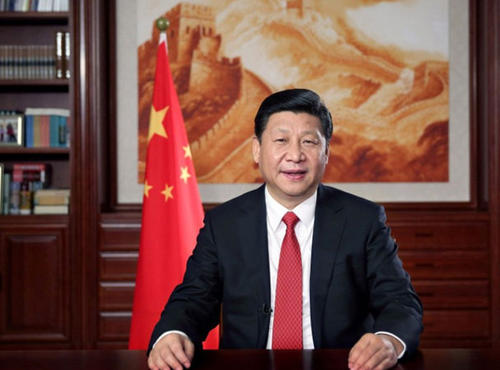

“老人说，什么是共产党？共产党就是自己有一条被子也要剪下半条给老百姓的人。""半条被子的故事”体现了中国共产党人的初心和本色，当年红军在缺吃少穿、生死攸关的时候，还想着老百姓的冷暖，真是一枝一叶总关情！
黄文秀，广西百色市委宣传部干部。她放弃大城市的工作会，毅然回到家乡，在脱贫攻坚第一线倾情投入，访遍贫困户，带领88户贫户实现脱贫，美好青春最终定格在了30岁，定格在了扶贫路上。
姜仕坤，贵州晴隆县委原书记。这名大山里成长起来的干部，扎根一线访贫问计，大力发展“羊、茶、果、蔬、薏”等特色产业，“一心只为老百姓过上好日子”，用自己46年的短暂生命兑现了对党和人民的承诺。
李保国，河北农业大学林学院教授。他35年如一日扎根太行山，每年进山“务农”超过200天，用科技把荒山秃岭抛进历史，把绿水青山留给未来，受益群众10万多人，是太行山上的“新愚公”。
一位扶贫干部说，要带领群众脱贫，党员干部自己必须先脱“三层皮”：“嘴要脱皮”，宣传解释好各项扶贫政策；“脚要脱皮”，走进每一户贫困户家里；“手要脱皮”，和他们想在一起、干在一起。
①中国共产党现在是一个拥有6500多万党员的大党，是一个掌管着960万平方公里国土、13亿多人口国度的执政党。 可是谁能想到，当初她却是诞生在一只小船上。在建党80周年之际，我特地赶到嘉兴南湖瞻仰这只小船。 这是一只多么小的船啊，要低头弯腰才能进入舱内，刚能容下十几个人促膝侧坐。我真不敢想，我们轰轰烈烈、排山倒海的80年就是从这条船里倾泻出来的吗？
②因为它是党史的起点，这条船现在被称为红船。 1921年7月23日，中国共产党第一次全国代表大会在上海法租界的一栋房子里召开，但很快就被巡捕监视上了。不得已，立即休会转移。代表之一李达，他的夫人王会悟是嘉兴人，是她提议到这里来开会。 8月1日，王会悟、李达、毛泽东先从上海来到嘉兴，租好了旅馆，就出来选“会场”。他们登上南湖湖心岛上的烟雨楼，见四周烟雨茫茫，水面上冷冷清清地漂着几只游船，不觉灵机一动，就租它一只船来当“会场”。 当时还计划好游船停泊的位置，在楼的东北方向，既不靠岸，也不傍岛，就在水中来回漂荡。第二天，其余代表分散行动，从上海来到南湖，来到这只小船上。下午，通过了最后两个文件，中国共产党就这样诞生了。
③今天，我重登烟雨楼，天明水静，杨柳依依。 这烟雨楼最早建于五代，原址是在湖岸上。明嘉靖年间，当地知府赵赢疏浚南湖，用挖起的土在湖心垒岛，第二年又在岛上砌楼。有湖有岛有楼，再加上此地气候常细雨蒙蒙，南湖烟雨便成了一处绝景。 清乾隆皇帝曾六下江南，八到烟雨楼，至今岛上还有御碑两通。现在楼头大匾上“烟雨楼”三个大字，是当年的一大代表董必武亲笔所书。 历史沧桑烟雨茫茫，我今抚栏回望，真不敢想象我们这样一个大党，当初是那样的艰难。那时百姓穷无立锥之地，要想建一个代表百姓利益的党，当然也就没有可落脚之处。 列宁说：群众分为阶级，阶级有党，党有领袖。当时这12个领袖是何等的窘迫，举目神州，无我寸土。 我眼看手摸着这只小船，这些小桌小凳，这竹棚木舷。我算了一下，就是把舱里全摆满，顶多只能挤下14个小凳，这就是现在有6500万党员的中共一大会场吗？ 但这个会场仍不安全，王会悟同志是专管在船头放哨的。但不管怎样，工农的党在这条小船的襁褓里诞生了。 距南湖不远是以大潮闻名的钱塘江，当年孙中山过此，观潮而叹曰：“世界潮流浩浩荡荡，顺之者昌，逆之者亡。”共产党在此顺潮流而生，合乎天意。
④西方人信上帝，我们认马克思主义。也许是马克思在冥冥中的安排，专门让我们这个大党诞生在一只小船上。于是党的肌体里就有了船的基因，党的活动就再也离不开船
宋人潘阆有一首写大潮中行船的名词：“来疑沧海尽成空，万面鼓声中。弄潮儿向涛头立，手把红旗旗不湿。”共产党就是敢立于涛头的弄潮儿。 一大之后，毛泽东一出南湖便买船西行湖南组织农民运动。大革命失败，他振臂一呼，发动秋收起义，上了井冈山。这时全国正处在白色恐怖之中，许多人不知革命希望在何方。 他挺立井冈之巅大声说道：革命高潮“是站在海岸遥望海中已经看得见桅杆尖头了的一只航船这时，周恩来也领导了南昌起义，兵败后南下广州，只靠一只小木船，深夜里偷渡香港，又转道上海，再埋火种。谁曾想到，惊涛骇浪中，那只小木船上坐着的就是未来共和国的总理。 蒋介石曾希望借中国大地上的江河阻灭革命，但革命队伍却一次次地利用木船突围决胜。天险大渡河曾毁灭了石达开的10万大军，但是当蒋介石围追红军于此，只见到远去的船影和岸边的草鞋。 抗战八年，共产党在陕北聚积了力量，然后东渡黄河，问鼎北平。而东渡黄河靠的还是老艄公摇的一条木船，船仍然不大，以至于连毛泽东心爱的白马也没能装上。 中国革命的整个司令部就这样在一条木船上实现了战略大转移。不久就有百万雄师乘着帆船过大江，解放全中国。中国历史上秦皇汉武们喜欢说他们是马上得天下，中国共产党真正是船上得天下。是船上生，浪里走而夺得天下的啊！”。
⑥中国古代有一个最著名的关于船的寓言故事：刻舟求剑，是讲不实事求是，不会发展地、辩证地看问题。 我们不讳言曾犯过错误，也曾做过一些刻舟求剑的事。我们曾急切地追求过新的生产关系，追求那些在本本里看到的模式，硬要在我们自己的刻舟之处去找主观上想要的东西。 因此也曾有几次尽兴放舟，“争渡，争渡，误入藕花深处”。最危险的一次是“文化大革命”，险些翻船。但是我们也敢于承认错误，改正错误。 这时中国共产党早已是一条大船，都说船大难调头，但是邓小平成功地指挥它调了过来。在我们干社会主义数十年后，又敢于重新问一句“什么是社会主义”，敢于说社会主义初级阶段至少需要100年。这勇气不下于当年在南湖烟雨中问苍茫大地，船向何处。
红船自南湖出发已经航行了80年。其间有时“春和景明，波澜不惊”。 有时“阴风怒号，浊浪排空”。80年来，党的领袖们时时心忧天下，处处留意行船的规律。 历史上第一个以舟水关系而喻治国驭世者，大概是荀子，后来魏征也把这个比喻说给唐太宗。他说：“水可载舟，亦可覆舟。”当我们这只小船航行到第24个年头，时在1945年7月1日，中国共产党开过七大，胜利在即，将掌天下。 民主人士黄炎培赴延安，与毛泽东有一次著名的谈话。黄问，如何能逃出新政权“其兴也勃，其亡也忽”的周期律。毛泽东答：“靠民主，靠相信人民群众。”依靠人民群众，我们打造出一只共和国的大船。 后来，红船航行到第71个年头，1992年，邓小平南巡再指航向：“逆水行舟，不进则退”“发展才是硬道理”。我们扬起有中国特色社会主义的风帆，又一次勇敢地冲上浪尖。 当这只船航行到第79年，2000年国家领导人视察浙江——历史巧合又是红船的出发地。他指出：党要永葆青春活力，就必须时刻坚持“三个代表”。 浪里飞舟八十年，心忧天下三代人。我们的事业蒸蒸日上，兴旺发达，中国共产党已是一个伟大的、成熟的党。
⑧南湖边上现在还停着这只小小的木船，烟消雨停，山明水静。游人走过，悄悄地向它行着注目礼。这已经是一种政治的象征和哲学意义的昭示。6500万党员的大党就是从这里上岸的啊。从贫无寸土，漂泊水上，到神州万里，江山红遍。党在船上，船行水上，不惧风浪，不忘忧患，顺乎潮流，再登彼岸。 照应开头，再次强调大党是从小船走出的，并祝愿党和人民勇往直前、永远奋斗，再创辉煌！
最近，全民为祁发宝等戍边英雄刷屏。2021年2月，中央军委授予祁发宝“卫国戍边英雄团长”荣誉称号。 在与外军交涉和激烈斗争中，团长祁发宝身先士卒，身负重伤；营长陈红军、战士陈祥榕突入重围营救，奋力反击，英勇牺牲；战士肖思远，突围后义无反顾返回营救战友，战斗至生命最后一刻；战士王焯冉，在渡河前出支援途中，拼力救助被冲散的战友脱险，自己却淹没在冰河之中。这些英雄的边防官兵把青春、鲜血乃至生命留在喀喇昆仑高原，筑起巍峨界碑。 巍巍喀喇昆仑，座座雪峰耸峙。千里热血边关，遍地英雄屹立。
“种得桃李满天下，心唯大我育青禾。是春风，是春蚕，更化作护花的春泥。热爱祖国，你要把自己燃烧。稻谷有根，深扎在泥土。你也有根，扎根在人们心里” 。《感动中国》组委会给予卢永根的颁奖词） “从教半个世纪，你立德树人，播撒春雨育桃李满天下；治学六十余载，你求知求真，浇注汗水写稻种新篇章。入党七十年，你倾其所有许党报国，用初心无改彰显家国情怀；恭俭一辈子，你知行合一止于至善，用时光沉淀洗涤名利尘埃。”
中国共产党是中国工人阶级的先锋队，同时是中国人民和中华民族的先锋队，是中国特色社会主义事业的领导核心，代表中国先进生产力的发展要求，代表中国先进文化的前进方向，代表中国最广大人民的根本利益。
